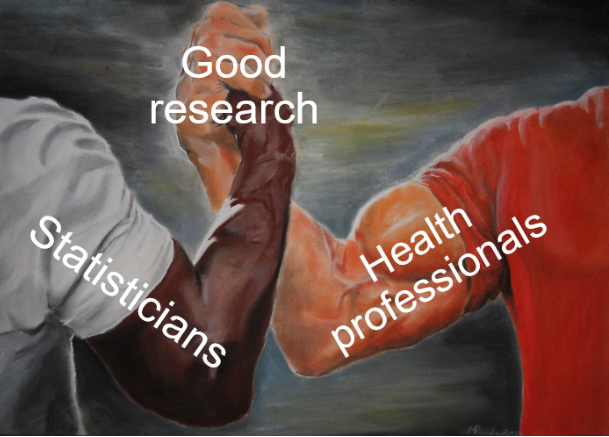

| Variable | Units | Range | Description | Notes |
|---|---|---|---|---|
| id | 1 to 8 | Unique identifier for each participant | ||
| group | 1 to 2 | Participant's randomly allocated group | ||
| bmi_baseline | kg/m^2 | 10 to 50 | Participant's BMI at baseline | |
| bmi_followup | kg/m^2 | 10 to 50 | Participant's BMI at the study endpoint | |
| drug | Rosuvastatin, Atorvastatin | Brand of statin administered | ||
| dose | mg | 5 to 20 | Prescribed dosage in mg of the medication | 5mg of Rosuvastatin is equivalent to 10mg of Atorvastatin |
A brief introduction to research for health professionals
Research on the Run 2021, Ballarat Health Services
research
consulting
I originally did this talk for Ballarat Health Services (now Grampians Health) back in 2021. I’d intended to upload the recording but unfortunately it didn’t materialise! Instead I’ve put the material from the talk here. I was first asked to do a ‘Stats 101’ talk for clinicians, but I don’t think that’s ever going to be useful. So instead, I wrote this talk to try and address the most common problems I face as a consultant biostatistician.
Let’s work together

The first thing that I want to acknowledge is that your time is precious and limited - I’m frankly amazed at your ability to fit research into your already busy jobs. It’s a testament to the passion and interest that you all have in learning and improving your practice. So given your busy when we work together I’ll do my best to work around your schedule and capacity.
When we are working together, you bring your clinical expertise and content knowledge to the table along with a question you think is important. I bring my statistical and methodological expertise that can help answer your question and my main goal is to help you do the best research that you can.
Now because I don’t have your clinical background, when we’re working together I’m going to have to ask you a lot of questions at the beginning to make sure I understand what the clinical context is. This is really important for me to be able to guide us towards a study design or analysis method that’s going to help answer the question that you have.
I’m not trying to make your life difficult by asking you 20 questions, I promise. I do want to note though that in the process of asking you 20 questions it’s not unlikely that your original question will change slightly, perhaps due to some constraint of available data or the number of people that’s feasible to recruit into your study, or some other reason. Don’t be disheartened when this happens, it’s a good thing - we’re refining your research question into something workable!
When to talk to me (or any statistician)
Quite often I’ll have people come seek my help after they’ve already done the data collection.
When to talk to me (or any statistician)
If you come to me only at the data analysis stage, the chances of me being able to help are low! Come and see me before then.
When to talk to me (or any statistician)
I can help at all of these stages, but we should start chatting at the very early stages of your research.
This is a broad overview of the different stages of research. We start off at the research question formulation stage and progress through each stage sequentially.
Quite often people progress through these stages and only talk to a statistician at the analysis stage. Having been in this situation a number of times I can tell you that it’s really challenging to be able to help. More often than not it turns out that I can’t answer the research question with the data that’s been gathered, and this is frustrating for everyone involved. So please try to involve a statistician earlier on.
If you come to me early on in the planning phase we can work together to create a comprehensive methods section of the protocol and set your study up for success. Once we’ve done this it will be much easier for myself, or another statistician, or even yourself, to be able to perform the analysis.
Let’s start at the start
Let’s start off at the research question stage. It’s really important to think carefully and come up with a very explicit research question. It’s OK to start off with some general ideas for what you’re interested in but you need to pin down exactly what you are trying to find out and write this as a research question. Once you’ve figured this question out it’s a good time to come and chat to me
Think carefully about your research question
A handy framework to use in creating a research question is the PICOT:
- Population - who are you interested in?
- Intervention - what is the intervention or exposure?
- Comparator - are you comparing to a control group, a different treatment?
- Outcome - what is the outcome of interest?
- Time - how long are you following people up for?
This framework might not work in all cases but it is a helpful place to start
PICOT example
Is a pedometer and activity coaching intervention effective in limiting gestational weight gain in obese pregnant women compared to a pedometer with self-managed activity over the course of their pregnancy.
PICOT example - Population
Is a pedometer and activity coaching intervention effective in limiting gestational weight gain in obese pregnant women compared to a pedometer with self-managed activity over the course of their pregnancy.
PICOT example - Intervention
Is a pedometer and activity coaching intervention effective in limiting gestational weight gain in obese pregnant women compared to a pedometer with self-managed activity over the course of their pregnancy.
PICOT example - Comparator
Is a pedometer and activity coaching intervention effective in limiting gestational weight gain in obese pregnant women compared to a pedometer with self-managed activity over the course of their pregnancy.
PICOT example - Outcome
Is a pedometer and activity coaching intervention effective in limiting gestational weight gain in obese pregnant women compared to a pedometer with self-managed activity over the course of their pregnancy.
PICOT example - Timeframe
Is a pedometer and activity coaching intervention effective in limiting gestational weight gain in obese pregnant women compared to a pedometer with self-managed activity over the course of their pregnancy.
- P - Obese women
- I - pedometer and activity coaching intervention
- C - a pedometer with self-managed activity
- O - gestational weight gain
- T - over the course of their pregnancy
I want to point out that coming up with good and concise research questions really is a skill and it takes practice. I find it’s much easier to just write a general version of your research question - a rough draft - and workshop it into something specific
Study designs
Observational studies:
- Cross-sectional (single measurement)
- Case-control study
- Cohort study:
- Retrospective cohort
- Prospective cohort
Experimental studies:
- Randomised studies
- Non-randomised studies
It can also help to consider what the right study design is to answer your research question. Different studies require different levels of involvement. I already know that you’re incredibly busy outside of trying to do research, so thinking about how much time you have available is important. I wouldn’t suggest committing to a randomised controlled trial if you or your colleagues haven’t got the time to drive it. Not everything needs to be a randomised controlled trial
Cross-sectional studies are relatively easy, there’s no follow up, no risk of people dropping out. However you can’t determine cause and effect. Useful for hypothesis generation, can be done using medical records (e.g. taking a cross-section of patients who attended your clinic during 2020). So if we were to think of the pedometer study as a cross section, we might just take a cross section of pregnant women and ask them if they have a pedometer or not and measure their weight.
Selecting people based on their outcome status and obtain information on any exposures retrospectively. Can be done using medical records, but deciding on an appropriate ‘control’ group can be challenging. To fit the pedometer study into this framework we’d have to first define what “excessive gestational weight gain” is, then we could use medical records from a group of women visiting the maternity unit and somehow figure out if they had a pedometer
Identification of a cohort of people without your outcome of interest at some baseline and following them up over time. Tend to be harder to run, suffer from people dropping out of the study
For a prospective cohort, perhaps we ask women whether they have a pedometer on their first visit to the maternity unit then we keep track of their weight over the course of their visits to the unit.
Randomised studies:
People with characteristics or health conditions of interest are recruited into a study and randomly allocated to one or more groups, then followed up over time to see what their outcomes are. These studies also tend to be costly and harder to run but are important for estimating cause and effect of treatments.
So for the pedometer study again, we could recruit pregnant women who visit the maternity unit and randomise them to one of our treatment groups, keeping track of their activity and weight over the course of their pregnancy, then analyse the results at the conclusion of the study.
Sometimes not always feasible to run a randomised trial though - e.g. we wouldn’t want to randomise someone to an exposure group where we force them to smoke cigarettes to examine lung cancer rates.
Non-randomised studies:
An example of a non-randomised study design is a ‘before and after’ study, where we might only use one intervention and take a measurement of our outcome of interest before and after our the intervention is administered. In this example there is no randomisation and we assume any changes in our outcome are due to the implementation of the intervention.
The protocol
The protocol
Use the template: https://www.bhs.org.au/media/koli42au/protocol-template-2018.docx
Use the template for your protocol. It’s helpful, makes it easy to fill in, and is standardised to include all the information you’d expect to find in a protocol.
Your protocol outlines exactly why and how you (and your collaborators) are going to run the study.
It’s a reference framework to guide each step of your study
If you disappeared in the middle of your study, someone else should be able to pick up your protocol and see the study through to the end.
If people want to replicate your study in another setting, the protocol should contain sufficient detail to enable them to do so.
The protocol is also what the ethics committee are going to review to determine whether your research proposal is methodologically sound as well as feasible
Ethics
Ethics
We need ethics and research governance approval:
- Before we analyse the data
- Before we collect any data
- Before we start recruiting participants
- Before we access registry data
https://www.bhs.org.au/research/ethics-and-research-governance/
Hospital records and other administrative data aren’t collected for the purpose of research, so just because we have access to the data it doesn’t mean that we can start extracting and analysing it
Plan your data collection
Plan your data collection
If we are relying on existing data:
- Plan in advance which variables we need
- Who is extracting the data?
- Is measurement consistent across time?
If we are collecting new data:
- Think about how we will measure things (instruments, surveys, etc.)
- Pilot these measures to make sure they work the way we expect
- One column per variable
- One row per observation
Plan in advance. Make a list of variables we need based on your research question and compare them against the reference material or data dictionary for the data source. If the question can’t be answered by the available data we’ll need to change the question or the data source.
Who is extracting the data? Is it just you? Are multiple people extracting data? We need to make sure everyone is on the same page about what data we need so we end up with consistent and usable data
Is measurement consistent across time? One of the challenges of using existing data, especially administrative and routinely collected data, is that if an operational change occurs that affects the way data is collected and we don’t know about it we can end up drawing spurious conclusions based on artefacts of the data.
Are we using a previously validated measure? Are we designing from scratch? Do we need to pilot the measure? Is the measure appropriate for the population we’re interested in? What are the range of values we expect to measure? Do the instruments capture this range?
This is especially important if we’re getting people to fill in the information themselves. If the question is confusing or vague, we’ll end up with a variety of data in formats we weren’t expecting or cannot use. This could be as simple as telling people what date format to use when writing the date.
Data collection tips
Here’s a typical (made up) example of a spreadsheet I might receive
Let’s go through some of the issues!
Data collection tips
Don’t use colour coding in spreadsheets - my analysis programs can’t see it! Instead create a column to represent that information.
Data collection tips
What’s this cell highlighted for? Don’t encode other important information using colours either - create a column to put comments in
Data collection tips
There’s a lot of information in this one column! Instead split it into multiple columns
Data collection tips
This looks like a typo! Be mindful of manually entering data
Data collection tips
Be careful not to include useless identifiable data in the spreadsheet - that goes for email addresses, names, patient numbers, and more!
Data collection tips
It’s important to make it clear what an empty cell means. Was there no information to record? Write this! Otherwise we can’t tell if we just forgot to record the data, or if there’s another reason it’s missing.
Data collection tips
If multiple people are collecting data make sure you’re all collecting it consistently. Dates are often the biggest problem - some people record D/M/Y, some people record M/D/Y. It doesn’t matter what format you use as long as it’s consistent.
Data collection tips
These two variables have the same name, but they have different values? Maybe they were BMI at baseline and follow-up, but this needs to be explicit in the column names!
Data collection tips
This dataset looks much better. One column per variable, one row per observation (in this case a person), no identifying information, no unnecessary information
Arguably the frequency column could be further split into two variables, one for the number of tablets, one for the frequency in days.
Make a data dictionary
A data dictionary should include:
- The name of the variable (e.g. height or blood pressure)
- The units of measurement (e.g. cm or mmHg)
- The range of values that are possible or plausible (e.g. 50cm to 250cm)
- A description of the variable (e.g. the highest of three sitting diastolic blood pressure measurements)
- Any important notes on the data (e.g. whether the variable was self-reported, whether the measurement device changed halfway through data collection)
Example data dictionary
Data types
- Nominal - Categories that have no inherent order
- E.g. Gender or blood type or group allocation
- Ordinal - Categories that have an order
- E.g. Level of mobility (poor, average, good) and Likert scales
- Interval - Continuously valued data with no meaningful zero, where the difference between values is equal
- E.g. Temperature in celsius
- Ratio - Like interval data except there is a meaningful zero
- E.g. Age or blood pressure or drug dosage
For nominal data there isn’t any ordering, they’re just different categories. There isn’t any order to blood types.
For Likert scales, this means scales like “Strongly disagree, disagree, neutral, agree, strongly agree”. In this example there’s a clear ordering going from the strongest level of disagreement through to the strongest level of agreement. Strongly disagree isn’t ‘twice as disagreeable’ just disagree, but there’s an order to options such that we could rank them in some way.
The point about no meaningful zero is important - for example with temperature the difference between 10 and 20 degrees celsius is the same as 20 and 30 degrees celsius - it’s a difference of 10 units in both cases. However, we wouldn’t say that 20 degrees is twice as hot as 10 degrees.
Thinking about the previous example where we couldn’t make statements about something being twice as much, for ratio data we can make those statements. For example, someone age 40 is twice the age of someone aged 20. The zero is also meaningful here as it indicates a complete absence - for example a drug dose of zero means no drug.
Data security
This is very important
When collecting study data, we must:
- Deidentify data and keep records
- Have a data storage and disposal plan in your protocol
- Do what we say we will in the protocol
- Adhere to privacy requirements of the BHS research office
- Be able to demonstrate we took reasonable steps to ensure the security of your data
We must not:
- Store identifiable data in a non-password-protected spreadsheet or restricted folder
- Share data with people not on the ethics approval
- Send data in an unsecure manner, e.g. emailing someone a non-password protected dataset
- Send data to personal email addresses or storage platforms
Data analysis
Data analysis
I don’t have slides on how to do data analysis, mainly because I’m hesitant to give a set of rote instructions saying “if you have this data do this analysis” as this can lead to doing analysis without thinking about it
After all, you can do an entire degree on how to do data analysis and still not know everything - trust me on this one! Hopefully though we’ve done enough planning in the protocol and the study has gone smoothly enough that the data analysis is simply doing what we said we’d do.
No study is perfect
Just like baking, you might set out to make the perfect cake
No study is perfect
By coming to talk to me first, we can avoid disasters…
No study is perfect
And produce something pretty reasonable instead!
Stats tips
P-values, forget about them!
The p-value is the most commonly misused and misinterpreted statistic
- Small p-value doesn’t mean we found something
- Conversely, a large p-values doesn’t mean there is no effect
- Report confidence intervals instead
- Think about clinical significance instead
Also, don’t put p-values in the baseline/descriptive characteristics table. It’s not useful or necessary.
There’s also no such thing as “trending to significance” - I often see it written “p=0.051 there was a trend towards significance”. There’s absolutely no guarantee that if you collected more data your p-value would get smaller and ‘become significant’. Remembering that statistical significance is not anywhere near as important as you think it is.
Further reading:
Greenland, S., Senn, S.J., Rothman, K.J., Carlin, J.B., Poole, C., Goodman, S.N. and Altman, D.G., 2016. Statistical tests, P values, confidence intervals, and power: a guide to misinterpretations. European journal of epidemiology, 31, pp.337-350.
Altman, D.G. and Bland, J.M., 1995. Statistics notes: Absence of evidence is not evidence of absence. Bmj, 311(7003), p.485.
Drawing conclusions from exploratory analysis
Don’t analyse every single relationship then report a finding based on a small p-value
- Even if you use multiple testing ‘corrections’
- Use exploratory analysis for hypothesis generation
What I mean by exploratory analysis is any time you do not have a pre-specified question or analysis and are ‘exploring’ the data you’ve collected by seeing what variables have relationships (for example a correlation).
Even if you correct for multiple hypothesis tests you are still open to drawing false conclusions based on p-values - your ‘significance threshold’ might now be 0.0001. You will unfortunately end up being even more confident in a finding that is spurious because you thought the multiple testing adjustment meant you wouldn’t make that error.
Choosing variables for analysis
Don’t pick variables based on p-values.
Instead, give careful consideration about what variables are important to your outcome.
A common practice is to do a whole bunch of statistical tests between different variables and your outcome and pick the ones with small p-values to go in your main analysis. This includes methods like stepwise regression. Don’t do it. Doing this can cause you to leave out critical variables which you know are prognostic of your outcome.
Further reading:
Smith, G., 2018. Step away from stepwise. Journal of Big Data, 5(1), pp.1-12.
Sun, G.W., Shook, T.L. and Kay, G.L., 1996. Inappropriate use of bivariable analysis to screen risk factors for use in multivariable analysis. Journal of clinical epidemiology, 49(8), pp.907-916.
Post-hoc power calculation
After finding a ‘null’ result (i.e. big p-value), some people suggest doing post-hoc power calculations
Don’t do them, they just re-present the p-value in a different way:
- A small p-value will come back with ‘high power’
- A large p-value will come back with ‘low power’
Instead do adequate sample size calculations at the planning stage of your study
Further reading:
Goodman, S.N. and Berlin, J.A., 1994. The use of predicted confidence intervals when planning experiments and the misuse of power when interpreting results. Annals of internal medicine, 121(3), pp.200-206.
Hoenig, J.M. and Heisey, D.M., 2001. The abuse of power: the pervasive fallacy of power calculations for data analysis. The American Statistician, 55(1), pp.19-24.
Sample size calculation
Sample size calculations are not just about using an online calculator to come up with a number
- You need to consider drop-out rates
- Consider the feasibility of the sample size. Do you have the time or staff to be able to recruit and process the number of participants needed?
- Costs of recruiting participants. A basic estimate might say you need to recruit more participants that you have funding for.
- Consider prior research. Considering what previous studies have found is a good place to start for thinking how much of an effect you think a treatment might have.
- Consider clinical significance. How much of a change would we need to see in your outcome to make a case for changing practice?
Dichotomising continuous variables
Generally speaking, splitting a continuous variable into categories is completely arbitrary and not a good idea. Think about splitting into age groups, say under 50’s and over 50’s. Is there really a difference between people aged 49 versus people aged 50? No, but deciding to put them in separate groups makes the decision that there is.
Splitting a variable into groups might help with presentation in a table, but for statistical analysis if a variable is continuous, keep it that way.
Further reading:
Altman, D.G. 1994. Problems in dichotomizing continuous variables. Am J Epidemiol. 139(4), pp.442-445.
Altman, D.G. and Royston, P., 2006. The cost of dichotomising continuous variables. Bmj, 332(7549), p.1080.
Correlation and causation
Ice cream sales and aggressive behaviour are positively correlated
Do ice cream sales cause aggressive behaviour?
Correlation and causation
Or does aggressive behaviour cause an increase in ice cream sales?
Correlation and causation
Maybe there’s a common cause, like hot weather!
This one’s a classic, but let’s start off from basics. We know that ice cream sales and violent crime are correlated. This means that when one changes, so does the other. In the case of ice cream sales and violent crime, when sales go up so does violent crime - they are positively correlated.
However, just because the two are correlated, it doesn’t mean that one causes the other. Increasing ice cream sales does not cause violent crime and conversely increasing violent crime does not cause ice cream sales to go up.
There’s a third common factor here - the temperature. As summer comes along and the temperature goes up, so do ice cream sales (who doesn’t like an ice cream on a hot day). Violent crime also goes up during summer - maybe because people are hot and bothered, maybe because people spend more time outdoors so there are more opportunities for violent crime to occur, who knows.
The point here is that just because you find that two things are correlated with each other, it doesn’t mean that there’s a causal relationship between them.
In conclusion
- Talk to a statistician early and often
- Come up with specific research questions
- Getting your protocol right will save you headaches later
- Don’t get hung up on doing a perfect study
Thanks to
- Andrew Althouse
- Darren Dahly
- Isabella Ghement
- Maarten van Smeden
- Sabine Braat and the MISCH team
And numerous other people who contributed in various ways to this presentation
The end
For more reading on ‘common statistical myths’ see https://discourse.datamethods.org/t/reference-collection-to-push-back-against-common-statistical-myths/1787